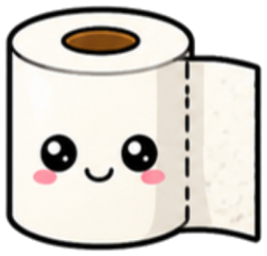
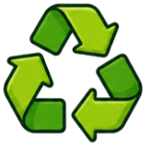
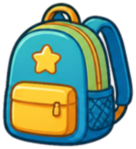

4번 방 · 19차시 · 모두의 마을
바꾸기 전과 후 비교 보고서
교실을 진짜로 바꾸고, 쉬워졌는지 비교해요.

번호
이름
1
우리 모둠이 바꾼 곳에 ○

휴지·학용품을낮은 칸으로 시간표에
그림 붙이기

분리수거 통에그림 붙이기

통로에 ‘가방두지 않기’ 선
2
바꾸기 전과 바꾼 뒤
그림을 그리고, 화면의 😀 수를 옮겨 써요바꾸기 전
🗄️⬆️휴지가 맨 위 칸에 있어요
😀 쉬웠던 체험 친구
1
명 / 3명➜
바꾼 뒤
🗄️⬇️휴지가 손 닿는 낮은 칸에 있어요
😀 쉬웠던 체험 친구
3
명 / 3명★
생각 저울
정답은 없어요!👍 좋아진 점
동생도 혼자서
휴지를 꺼내요.
🤔 걱정되는 점
낮은 칸에 있던 책이
갈 곳이 없어요.
💡 이렇게 하면?
책은 위 칸에 두고
그림 이름표를 붙여요.
교실을 진짜로
바꿨어요☆☆☆
바꿨어요☆☆☆
바꾸기 전과 후를
비교했어요☆☆☆
비교했어요☆☆☆
더 좋게 바꿀 점을
생각했어요☆☆☆
생각했어요☆☆☆
4번 방 열쇠